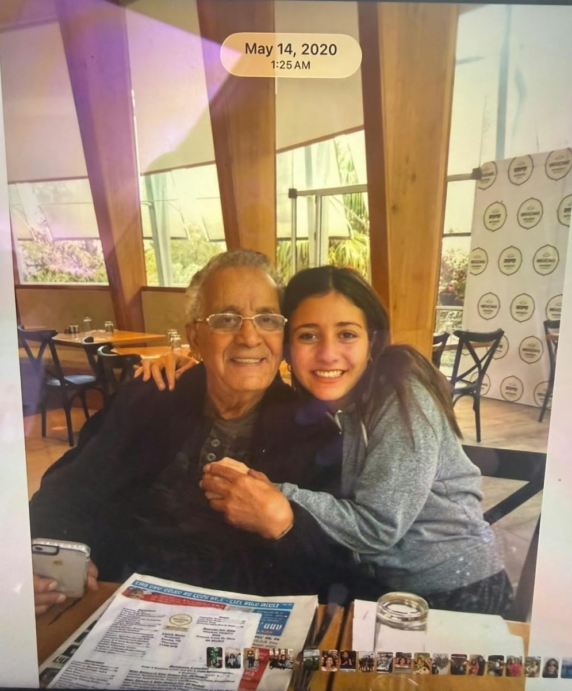
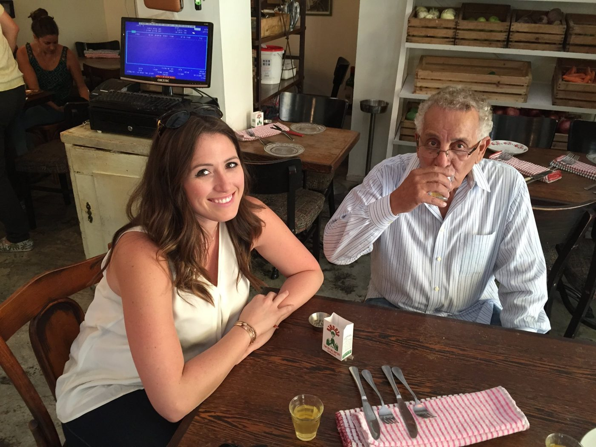
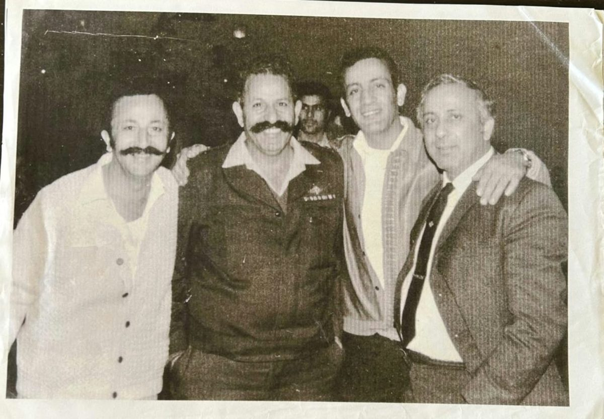

משה יפת ז״ל
MOSHE YEFFET
"Moshe from the Rondo" · A true Jerusalem legend
JERUSALEM · NOVEMBER 14, 2026
SHARED BY HIS NIECE · HAR HAMENUCHOT, JERUSALEM
Our Uncle Moshe!
A dear man, beloved by everyone!
How lucky we are that you were a friend of our father's and introduced him to your sister, our mother. Thanks to you, they became a couple and built a wonderful family. For that, we will be grateful to you for the rest of our lives.
Our Uncle Moshe, wherever you went, you brought light and joy. You were a magnet; everyone sought you out and wanted to be in your company. We always looked forward to seeing you, to hearing your stories from "back in the day." You knew how to spice up a tale, and listening to you was always fascinating and intriguing. There isn't a single person in Jerusalem who doesn't know Moshe Yeffet.
We always used to boast that our uncle was "Moshe from the Rondo," a true Jerusalem legend.
Our children would wait for Uncle Moshe to arrive and ask for a whiskey or an Arak with ice; the moment the glass was empty, it would, as if by magic, refill itself. They would watch you and listen to you with such wonder and deep affection, never wanting those visits to end.
If anyone needed help, with anything at all, we knew that Moshe would find a solution.
You meant the world to our mother; the bond between you two as siblings was truly special, the kind that makes others envious. Unconditional love.
Our Moshe, you will always remain in our hearts: beloved, funny, handsome, wise, and one of a kind. There is no one else like you! Now the time has come for you to join all our loved ones who are no longer with us... Give kisses to our father, your best friend...
Rest in peace.
דוד משה שלנו!
איש יקר ואהוב על כולם!
איזה מזל יש לנו שהיית חבר של אבא שלנו והכרת לו את אחותך, אמא שלנו. בזכותך הפכו לזוג והקימו משפחה לתפארת. על זה נודה לך כל חיינו.
דוד משה שלנו, לכל מקום שהגעת הבאת איתך אור ושמחה. היית מגנט, כולם חיפשו ורצו להיות בחברתך. היינו מחכים לפגישות איתך, לשמוע ממך סיפורים של פעם.. היית מתבל את הסיפורים, תמיד היה מעניין ומסקרן לשמוע אותך. אין ירושלמי שלא מכיר את משה יפת.
היינו תמיד משוויצות שדוד שלנו זה משה מהרונדו, מירושלים של זהב, תמיד זה היה שם דבר.
הילדים שלנו היו מחכים שדוד משה יבוא, יבקש ויסקי או ארק עם קרח, איך שהכוסית נגמרת, בלי מילים היא מתמלאה מאליה.. היו מסתכלים עלייך ומקשיבים לך בהתפעלות ובהמון אהבה, לא רוצים שהמפגשים איתך יסתיימו.
נֵר ה׳ נִשְׁמַת אָדָם
"The soul of man is the candle of God." Proverbs 20:27
One candle for each of us gathered tonight.






